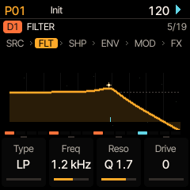
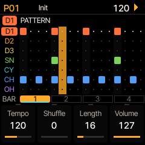
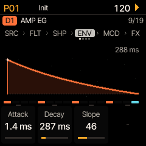
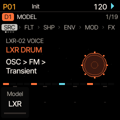
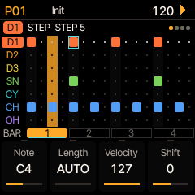
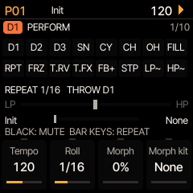
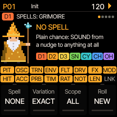

Quick start
How Elixir works on the FM-1, in nine short cards. Follow along on the unit, or with the mouse in the emulator.
Your first beat
Nine steps, about two minutes. The cards below explain what you just did.
1 / 9
Getting around
Pick a track first, with black keys 1–7 or by turning ALGORITHM: the sound and sequencer pages are about that track. Then three moves work the same everywhere:
- Press a button to open its section: HOME the step grid, EDIT the sound, FX the effects.
- Press it again for the button's next section, then back to the first.
- Turn SELECT to turn the pages. The title shows where you are (5/19).
- HOME
- Step grid → patterns → load → song
- SEQ
- The track's pages (length, generator, melody, scale, groove …) → step edit
- EDITSELENVLFO
- The selected track's sound (card 4)
- FX
- Reverb, effects bus, delay, dirt, master filter, compressor, routing
- GLO
- Mixer → settings (MIDI, USB audio, colors …)
- ARP
- Perform → spells → wander → global modulation (cards 7 and 8)
- SAVE
- Save → load (card 9)
- PLAYREC
- Start and stop; record (card 6)
OCT− is Elixir's shift and OCT+ is copy and OK. Hold OCT− and the screen lists what each key does with it.

2 / 9
Tracks and steps
The keyboard is the sequencer. Black keys 1–7 are the seven tracks: D1 D2 D3 (the kick and two toms), SN, CY, CH and OH. Each one plays its sound as you pick it. Turning ALGORITHM picks them too.
The 16 white keys are the 16 steps of a bar: tap one to turn it on or off. Black keys 8–11 show bars 1–4. Each track can have its own length, up to four bars, so tracks can loop against each other.
Hold OCT−, press a track's black key to mute it. Hold OCT−, press a bar key to make the track that many bars long.

3 / 9
The four knobs
KNOBS 1–4 change the four values at the bottom of the screen, whatever the page. On the grid they're the tempo, the shuffle, the track's length and its volume.
- PRESETS browses kits, the LXR-02's factory kits among them: turn it, then press OCT+ to load one. On a sound page it browses single sounds for the track.
- Hold OCT− while turning a knob for fine steps.
- Hold OCT+ while turning a knob on a sound page to change every track at once.
- MASTER is the volume.

4 / 9
Shaping a sound
A track's sound is one row of 19 pages, in the order the sound flows through a synth. EDIT opens the row at its start, and SELECT walks all of it, every sound setting the track has. SEL, ENV and LFO are shortcuts: each jumps straight to its part of the row. The line under the title shows which part you're in.
- EDIT
- The start: model → oscillator → FM → transient, then on through the rest
- SEL
- Jumps to the filter → shape (drive, bits, tilt) → insert effect
- ENV
- Jumps to the amp envelope → gate → mod envelope and velocity
- LFO
- Jumps to LFO 1 → LFO 2 → random per hit → cross mod and choke → sends
The first page, MODEL, swaps the drum's engine: the LXR's own, Rings, Plaits or one of Elixir's.
Lost the sound? Hold OCT−, press white key 10: the track's sound goes back to how the kit has it.

5 / 9
One step, one value
Hold a step's white key and turn a knob on any sound page: that value changes on that step only. This is a lock. The knob's card shows it in the accent color, and the step gets a dot on the grid. A step can hold eight.
For everything else about a step, press SEQ twice for step edit. Tap a white key to pick the step, and turn SELECT for its pages: note, length, velocity and timing; chance and conditions; ratchets; its locks.

6 / 9
Recording, copying, clearing
- Record: press REC, then PLAY, and tap black keys 1–7 like drum pads. Each hit lands on the nearest step and stays there as the pattern loops. Knobs turned on a sound page while recording are written as locks.
- Erase as it plays: while recording, hold OCT− and OCT+ together. The selected track's steps go as the playhead passes them.
- Copy a bar: hold OCT+, press a bar key. The bar on screen is copied into it, every track.
- Clear: hold OCT−, press OCT+. Keep OCT− held, turn SELECT to choose what (the track, the pattern, its locks, the sound), and press OCT+ again. Let go of OCT− to cancel.
7 / 9
Playing live
Press ARP for PERFORM. The white keys become effects that last while you hold them: 1–7 roll a track, 8 is a fill, 9 repeats, 10 freezes the delay, 11 and 12 throw the track into the reverb or the FX bus, 13 pushes the delay's feedback, 14 is a tape stop, and 15 and 16 sweep the master filter. The black keys mute.
Let go and the beat is back as it was. Hold OCT−, press a key to latch it on.
Something still on and you don't know what? Hold OCT−, press HOME: every performance effect off, from any page.

8 / 9
Letting it surprise you
- Spells: press ARP twice. Pick tracks with the black keys and press OCT+ to cast: the sound and pattern of those tracks change at random, in the spell's direction. OCT+ again rolls again, OCT− takes it back exactly, bar key 2 keeps it.
- Wander: press ARP a third time, then OCT+. The pattern drifts somewhere new over minutes. OCT− brings it home.
- Generators: on SEQ's GENERATOR page, Euclid, Grids, a Turing machine and others write a track for you. UNDO on the ACTION page takes back their last change.

9 / 9
Saving
Elixir saves your session by itself a few seconds after you stop, so switching off loses nothing.
To keep a version, save it as a project (there are four): press SAVE, turn KNOB 1 to PROJECT, press OCT+, name it (KNOB 1 the letter's position, KNOB 2 the letter) and press OCT+ again. Press SAVE again for the load page.
Went too far? Hold OCT−, press white key 13 (RELOAD): the kit and the pattern as last saved. The library page backs your projects up to a computer.
Where to go next
The manual
Every page, button and knob, with the ideas behind them.
The cheat sheet
Every page's knobs on a few pages, to print and keep by the FM-1.
Every page
Each screen, mode by mode, in the order SELECT goes through them.
The emulator
The real firmware in your browser, to try any of this with the mouse.